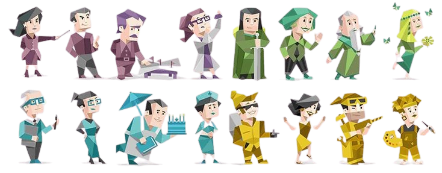

FIND OUT YOUR PERSONALITY🔍
Apa Itu Kepribadian ❓🤔
Kepribadian adalah keseluruhan pola perilaku, pikiran, emosi, dan cara seseorang menanggapi lingkungan yang membedakannya dari orang lain. Kepribadian mencerminkan cara khas seseorang berinteraksi dengan dunia di sekitarnya, termasuk bagaimana ia berbicara, merasakan, berpikir, mengambil keputusan, serta berhubungan dengan orang lain. Kepribadian bersifat relatif stabil sepanjang waktu dan situasi, meskipun dapat mengalami perubahan seiring pertumbuhan, pengalaman hidup, dan kondisi tertentu.
🩺 Faktor Pembentuk Kepribadian
🧬 1. Faktor Biologis & Genetik Warisan genetik memegang peranan besar: studi kembar identik menunjukkan bahwa 30–60 % trait kepribadian dipengaruhi oleh genetika.
👨👩👧👦 2. Faktor Keluarga & Pengasuhan Gaya pengasuhan orang tua (otoriter, permisif, atau suportif) sangat membentuk kepercayaan diri, cara menyelesaikan konflik, dan stabilitas emosional anak.
🌍 3. Lingkungan & Budaya Teman sebaya, sekolah, dan komunitas dapat membentuk nilai, norma, dan kepribadian sosial—misal menjadi lebih terbuka atau kolaboratif.
🏙️ 4. Lingkungan Fisik & Mediasi Media Paparan media dan teknologi turut membentuk persepsi dunia, cara berinteraksi, dan tingkat optimisme atau empati
📚 5. Pendidikan & Pengalaman Kelompok Pengalaman di sekolah, universitas, dan lingkungan belajar membangun keterampilan sosial (leadership, kolaborasi) dan membentuk nilai sikap terhadap pencapaian.
🌟 6. Pengalaman Hidup & Peristiwa Signifikan Peristiwa seperti trauma, teman-teman dekat, perubahan besar dalam hidup bisa memberi dampak mendalam pada karakter, gaya coping, dan kepercayaan diri individu.
MBTI (Myers-Briggs Type Indicator)
📝 Pengertian
MBTI, atau Myers-Briggs Type Indicator, adalah tes kepribadian yang dirancang untuk membantu seseorang memahami preferensi mereka dalam berpikir, merasakan, dan berinteraksi dengan dunia sekitar. Tes ini mengelompokkan individu ke dalam salah satu dari 16 tipe kepribadian berdasarkan preferensi mereka di empat domain yang berbeda. MBTI dikembangkan oleh Isabel Briggs Myers dan ibunya, Katharine Cook Briggs, yang terinspirasi oleh teori psikologi Carl Jung. Tes ini sering digunakan untuk pengembangan diri, karir, dan pemahaman interpersonal
✨ Manfaat Tes MBTI
Menurut MBTI (Myers-Briggs Type Indicator) terdapat 16 tipe kepribadian :
*Note : Tekan untuk temukan penjelasan dari jenis kepribadian tersebut